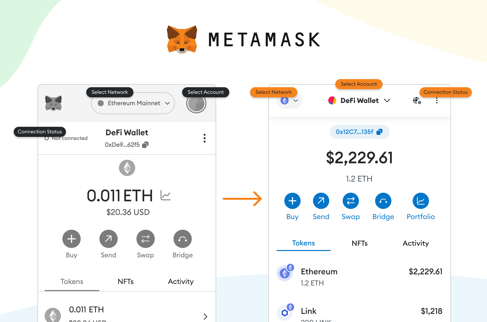

AI Website Generator
The cryptocurrency industry has developed far beyond simple buying and selling of digital assets. Today, users can interact with decentralized exchanges, NFT marketplaces, blockchain games, lending platforms, staking services, and thousands of decentralized applications. To access many of these services, users need a cryptocurrency wallet capable of connecting directly to blockchain networks.
MetaMask is one of the best-known Web3 wallets and has become a widely used gateway to decentralized applications. It allows users to manage crypto accounts, hold and transfer digital assets, connect to Web3 applications, swap tokens, and interact with blockchain networks.
MetaMask's official website currently describes the product as a wallet and broader financial application, with features including token swaps, trading products, a money account, card functionality, and access to decentralized applications. The company reports more than 100 million downloads across Google Play, the App Store, and Chrome Web Store.
This article explains what MetaMask is, how it works, its major features, self-custody model, security considerations, advantages, limitations, and its role in the growing Web3 ecosystem.
MetaMask is a self-custodial cryptocurrency wallet that provides users with a way to interact with blockchain networks and decentralized applications.
Unlike a centralized cryptocurrency exchange, MetaMask is designed around user-controlled accounts. Users can create or import accounts and use them to send transactions, receive tokens, and connect to decentralized applications.
The wallet is available through browser-based software and mobile applications. Its browser extension has become particularly popular because it allows users to connect directly to Web3 websites.
MetaMask is therefore more than a digital wallet for storing tokens. It acts as an interface between a user's browser or mobile device and blockchain-based applications.
At a basic level, MetaMask manages blockchain accounts and provides an interface for signing transactions.
When a user creates a wallet, MetaMask generates a Secret Recovery Phrase (SRP). This phrase is used to generate and recover the accounts associated with the wallet. MetaMask's official documentation states that its standard wallet setup uses a unique 12-word Secret Recovery Phrase.
The blockchain itself does not store the wallet inside MetaMask. Instead, blockchain networks record account balances and transactions, while MetaMask provides the software interface through which users can access and control their accounts.
When a user sends a transaction, MetaMask helps prepare the transaction and asks the user to approve it. The transaction is then submitted to the relevant blockchain network.
This process allows users to interact directly with decentralized infrastructure rather than relying entirely on a centralized intermediary.
One of MetaMask's defining characteristics is self-custody.
With a traditional financial institution, the institution generally controls access to an account. With a self-custodial cryptocurrency wallet, the user is responsible for the credentials that control the wallet.
MetaMask explains that the Secret Recovery Phrase is the foundation of the wallet. Whoever possesses the SRP can control the accounts derived from it. MetaMask also states that it cannot recover a lost SRP for users.
This gives users greater control but also creates greater responsibility.
If a user loses the recovery information and has no alternative recovery method available, access to the wallet can potentially be lost permanently.
For this reason, wallet security is one of the most important aspects of using MetaMask.
MetaMask can be used to send and receive supported crypto assets.
To receive cryptocurrency, a user provides a public wallet address. To send cryptocurrency, the user enters the destination address, selects the asset and amount, reviews the transaction, and confirms it.
Users should carefully check the destination address and network before approving transactions.
Blockchain transactions are generally difficult to reverse once confirmed. Sending an asset to an incorrect address or incompatible network can therefore result in financial loss.
MetaMask's interface helps users review transaction details before signing, but the final responsibility for approving a transaction remains with the wallet user.
One of MetaMask's biggest advantages is its ability to connect with decentralized applications, often called DApps.
A decentralized exchange might ask a user to connect a wallet before allowing token swaps. An NFT marketplace may require a wallet connection to purchase or sell an NFT. A blockchain game may use a wallet to identify a player's on-chain assets.
Instead of creating a separate account and password for each application, a user can connect a compatible wallet.
MetaMask therefore functions as a bridge between users and the decentralized web.
However, connecting a wallet does not automatically mean users should trust an application. Users should research DApps, verify website addresses, and review wallet prompts carefully before signing transactions.
MetaMask includes token-swapping functionality that allows users to exchange one crypto asset for another through supported networks.
The official MetaMask website currently promotes token swaps across multiple popular networks.
A swap generally involves selecting the asset a user wants to sell, choosing the asset they want to receive, reviewing the quoted exchange rate and transaction information, and approving the transaction.
The actual mechanics can involve decentralized exchanges and liquidity providers.
Users should examine the quoted rate, network fees, slippage, token contract, and transaction details before confirming a swap.
Crypto prices can change quickly, and the final execution price can differ from an initial estimate.
Staking has become an important component of many blockchain ecosystems.
MetaMask provides access to staking-related functionality for supported assets and networks. Staking generally involves committing eligible assets to help support a blockchain's operations in exchange for potential rewards.
The exact mechanics depend on the blockchain and service being used.
Staking should not be viewed as guaranteed income. Rewards can change, token prices can fluctuate, and certain staking arrangements can involve withdrawal or unbonding periods.
Users should understand the underlying blockchain and staking mechanism before committing assets.
Security is a major focus of MetaMask because a compromised wallet can result in significant losses.
MetaMask's security information describes features including phishing protection, security alerts, transaction protection, hardware-wallet integrations, and active threat surveillance.
The platform also provides warnings when users encounter potentially suspicious websites or links.
These protections can reduce certain risks, but they cannot eliminate every threat.
Scammers may create fake websites, counterfeit tokens, fraudulent support accounts, malicious DApps, and phishing campaigns designed to trick users into revealing sensitive information or approving harmful transactions.
Users should therefore treat every transaction and wallet connection carefully.
The Secret Recovery Phrase deserves special attention.
MetaMask explicitly states that users should never share their SRP with anyone, including someone claiming to be MetaMask support.
A legitimate support representative should not need a user's recovery phrase.
Users should also avoid entering their recovery phrase into websites or forms unless they are deliberately restoring their own wallet through the official MetaMask software.
MetaMask recommends keeping the phrase securely backed up and emphasizes that losing it can result in permanent loss of access.
For larger cryptocurrency holdings, users may also consider using a hardware wallet. MetaMask currently lists integrations with hardware-wallet products including Ledger, Trezor, Keystone, Lattice, NGRAVE ZERO, and others.
Hardware wallets provide another security layer by keeping private keys in a dedicated physical device.
MetaMask can integrate with supported hardware wallets, allowing users to interact with Web3 applications while keeping transaction-signing credentials on the hardware device.
This can be particularly useful for users managing significant digital-asset holdings.
However, hardware wallets do not eliminate all risks. Users still need to verify websites, wallet addresses, transaction details, and smart-contract permissions.
A hardware device can protect private keys, but it cannot prevent a user from voluntarily approving a malicious transaction.
Another component of the MetaMask ecosystem is MetaMask Snaps.
Snaps are extensions that can add functionality to MetaMask. They allow developers to introduce additional capabilities and blockchain integrations without requiring users to replace the wallet.
MetaMask's security documentation highlights Snaps as a way to customize wallet functionality and security capabilities.
This creates a more extensible wallet architecture in which users can potentially add functionality based on their needs.
As with any third-party extension, users should evaluate the developer and permissions associated with a Snap before installing or using it.
MetaMask can appear complicated to someone new to cryptocurrency, but the basic workflow is relatively straightforward.
A beginner typically needs to:
Install MetaMask from an official source.
Create a new wallet or import an existing one.
Secure the wallet's recovery credentials.
Add or receive supported digital assets.
Connect to a trusted Web3 application when needed.
Review every transaction before signing.
Keep wallet software and devices updated.
MetaMask's official documentation recommends obtaining the wallet through legitimate sources and provides guides for creating, restoring, and securing wallets.
Beginners should avoid rushing into complex DeFi applications immediately. Understanding basic wallet functions, network fees, token approvals, and transaction signing can help reduce avoidable mistakes.
MetaMask offers several advantages to Web3 users.
Broad Web3 Compatibility
MetaMask can connect users with a large range of decentralized applications and blockchain services.
Self-Custody
Users can maintain direct control over their wallet accounts rather than depositing funds into a centralized exchange.
Web3 Access
The wallet provides a convenient gateway to DeFi, NFTs, decentralized exchanges, games, and other blockchain applications.
Multiple Features
Beyond basic transfers, MetaMask now includes services such as swaps, staking-related functionality, and other financial features.
Hardware-Wallet Support
Supported hardware-wallet integrations provide additional options for users concerned about protecting larger holdings.
Security Tools
Phishing protection, security alerts, and transaction-related warnings can help users identify certain threats.
MetaMask also has limitations.
The most significant is the responsibility associated with self-custody. Users must protect their recovery credentials and carefully manage transactions.
There are also network-specific risks. Different blockchains have different transaction fees, confirmation mechanisms, smart contracts, and security assumptions.
DApps create another layer of risk. Connecting a wallet to an application or approving a token permission can have consequences that users may not fully understand.
Crypto assets are also volatile. MetaMask provides access to cryptocurrency markets, but using the wallet does not protect users against losses caused by falling asset prices.
Finally, phishing remains a major threat. Fake MetaMask websites and fraudulent support accounts can attempt to steal recovery phrases or private keys.
As Web3 continues to evolve, cryptocurrency wallets are increasingly becoming full-service interfaces rather than simple storage applications.
MetaMask's current product direction reflects this trend. Its website now highlights trading, swaps, financial services, card functionality, global payments, and other capabilities alongside its traditional wallet functions.
The broader development of Layer 2 networks, decentralized finance, tokenized assets, NFTs, blockchain games, and other Web3 applications could further increase demand for flexible wallet infrastructure.
At the same time, wallet providers face the challenge of making advanced blockchain functionality easier to use without compromising user control and security.
MetaMask's continued development will therefore likely focus on usability, security, network compatibility, and access to a broader range of blockchain-based services.
MetaMask has become a major gateway between users and the decentralized web. Its role extends beyond holding cryptocurrency, allowing users to send and receive assets, connect to Web3 applications, swap tokens, participate in supported staking services, and interact with blockchain ecosystems.
Its self-custodial model gives users direct control of their accounts, but that control comes with responsibility. The Secret Recovery Phrase and private keys must be protected carefully, while every website connection, token approval, and transaction should be reviewed before approval.
MetaMask's security tools, hardware-wallet integrations, and expanding Web3 functionality make it a versatile wallet for both newcomers and experienced users. However, no wallet can eliminate the risks associated with cryptocurrency, smart contracts, phishing, or market volatility.
For anyone exploring decentralized finance and Web3, understanding how MetaMask works is an important step toward understanding how blockchain applications connect users with decentralized networks.
AI Website Generator